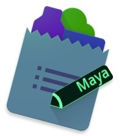
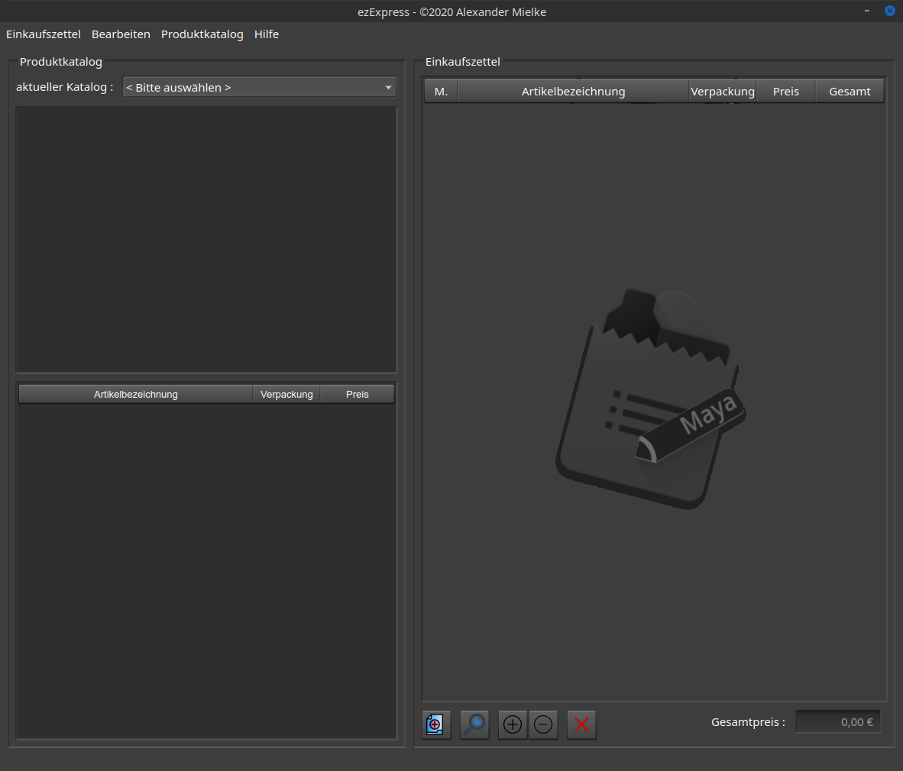
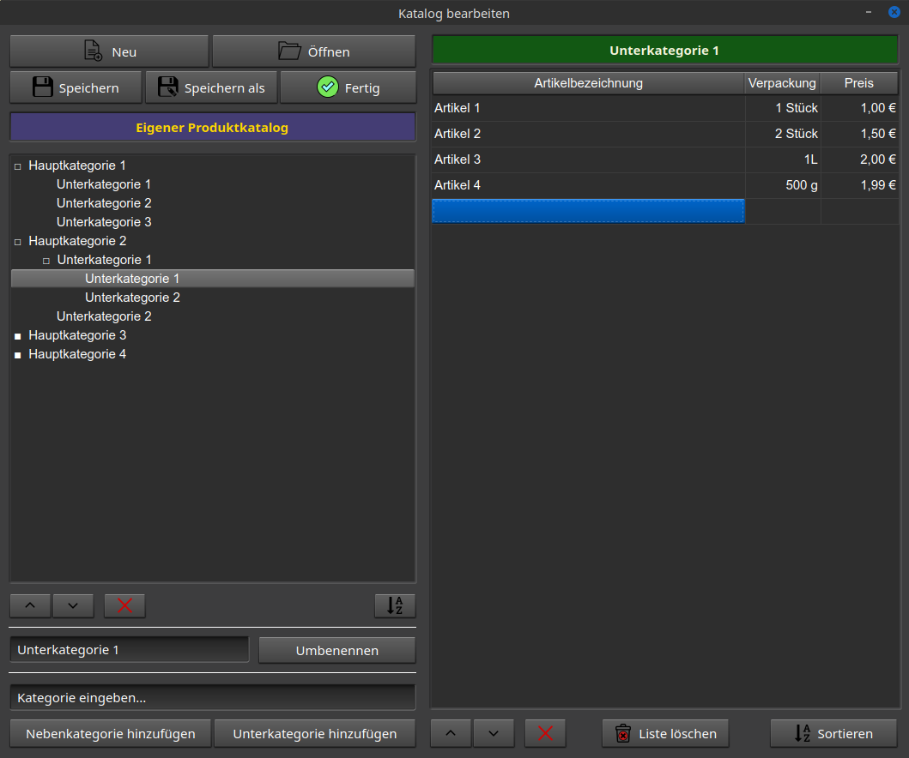
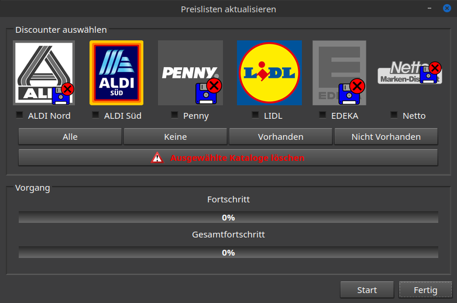
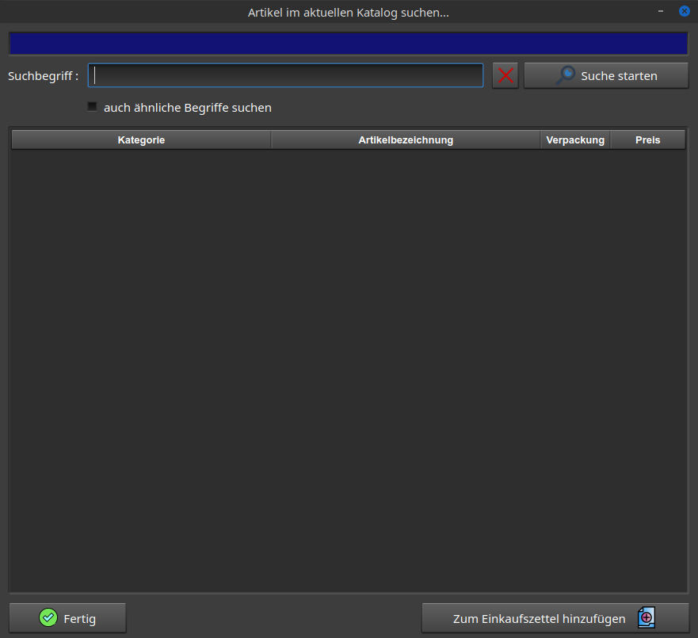
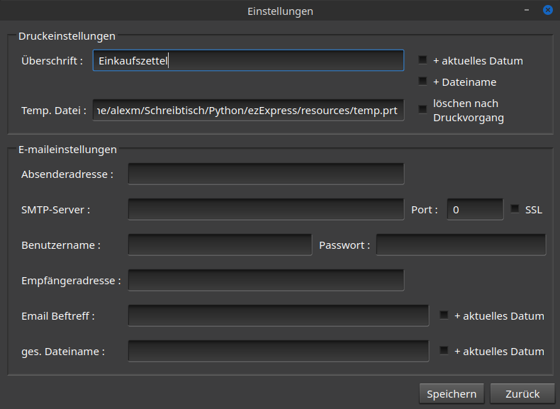

©Copyright 2020 by Alexander Mielke
Kontakt: alexandermielke@t-online.de
Das Programm ezExpress wird under der Apache License, Version 2.0 veröffentlicht.
(Informationen zur Lizenz einsehen)
ezExpress ist ein Programm zum Erstellen eines Einkaufszettels mit Artikeln eines Produktkataloges.
Produktkataloge können selbst erstellt oder automatisch über einen integrierten Web-Scraper vom deutschen
Internetanbieter www.discounter-preisvergleich.de
erzeugt werden. Beim letzteren stehen einige der
bekanntesten deutschen Discounter zur Auswahl.
Die Produktkataloge können nach Belieben verändert und gespeichert werden. Für die Produktkataloge wird
eine selbstentwickelte Datenstruktur (Baumstruktur) verwendet, um eine Abhängigkeit von SQL oder anderen
Datenbanken und die damit verbundenen Software-/Netzwerkinstallationen zu vermeiden. Die mit ezExpress
erstellten Einkaufszettel können verändert, gespeichert, ins Adobe PDF-Format exportiert oder per Email
zum Beispiel an ein Mobiltelefon oder Tablet versendet werden. Die erstellten PDF-Dateien beinhalten
Formular-Checkboxen vor jedem Artikel, um diese „abzuhaken“ und somit den Einkauf zu erleichtern.

Hierzu wählen Sie in der Menüleiste die Aktion
Produktkatalog
und dann Bearbeiten… aus.

Hierzu wählen Sie in der Menüleiste die Aktion
Produktkatalog
und dann WebScraper… aus.

Hierzu wählen Sie in der Menüleiste die Aktion Produktkatalog und dann Importieren…
aus.
Haben Sie schon einen gespeicherten Produktkatalog, können Sie ihn im dafür vorgesehenden
Verzeichnis
ablegen,
damit dieser automatisch von ezExpress erkannt werden kann, oder Sie importieren ihn von Ihrem
Speicherort.
Erst einen Katalog auswählen, dann eine Kategorie auswählen und die gewünschten Artikel auswählen und
zum
Einkauszettel hinzufügen. Um das Finden von Artikeln in
großen Produktkatalogen leichter zu gestallten, können Sie auch die eingebaute Suchfunktion benutzen:
Diese
finden Sie unter Bearbeiten und dann Artikel suchen…

Haben Sie sich einen Einkaufszettel erstellt, können Sie
verschiedene
Aktionen
mit diesem ausführen.
Die Ansicht des Einkaufszettels kann übrigens zwischen einer einfachen Listenansicht
(voreingestellt) oder einer komfortableren Kategorieansicht gewechselt werden. Bitte beachten
Sie: Diese Einstellung wird auch für die weitere Verarbeitung des Einkaufszettels
verwendet!
Nicht vergessen...!
Es öffnet sich ein Druckdialog.
Es öffnet sich ein Dateidialog.
Um einen Einkaufszettel als E-Mail zu versenden, müssen Sie
hierfür
die erforderlichen
Informationen zu Ihrem E-Mail-Konto in den Einstellungen speichern. Diese erhalten Sie von
Ihrem E-Mail-Anbieter. Die Einstellungen finden Sie unter dem Menüeintrag Einkaufszettel
und dann
Einstellungen…

Hinweis:
Ihre Daten werden zwar lokal gespeichert, aber Ihr Passwort wird per
„Advanced Encryption Standard" AES 128 Methode verschlüsselt.
Bei Anregungen, gefundenen Fehlern oder Wünschen können Sie mich gerne per Mail kontaktieren.
Kurzanleitung ©Copyright 2020 by Alexander Mielke